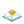

Live Viewer
· live DimOS scene
Top-down
Fit view
connecting…
Streams
Hide all
none yet
Legend
robot pose & body
odometry trail
planned path
lidar / costmap points
Z slice
WASD MOVE · Q/E DOWN/UP · DRAG LOOK · SCROLL DOLLY · RIGHT-DRAG PAN · RIGHT-CLICK MARKER · DBLCLICK RECENTER
Move this marker
Place marker here
Clear markers
Marker · floor (m)
Start
Mid
End
Axis
z
x
y
Voxels
Size
5 cm
10 cm
20 cm
40 cm
Filter & downsample
Downsample
none
2×
4×
8×
16×
Max range
none
3 m
5 m
10 m
20 m
50 m
Z min
Z max